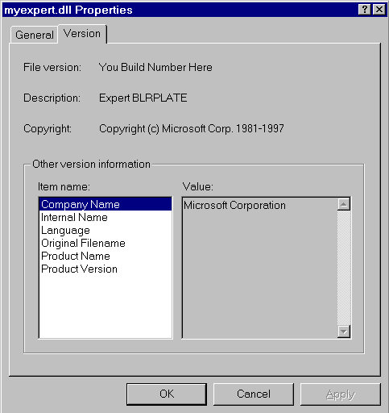

description: Viewing Expert DLL Properties
ms.assetid: 90e9f32b-79cd-4199-8488-33c092579e96
title: Viewing Expert DLL Properties
ms.topic: article
ms.date: 05/31/2018
Viewing Expert DLL Properties
Use the following procedure to view an expert DLL properties.
To view DLL properties
- Open Windows Explorer and go to the \Experts subdirectory of Network Monitor (C:\Program Files\NetMon2\Experts, for example).
- Select the desired DLL and right-click the file.
- Click Properties and Version. The following Myexpert.dll Properties status window example shows the DLL properties.
- Click the desired Item name to display information in the Value pane.
- Click OK to close the Properties dialog box.

Â
Â